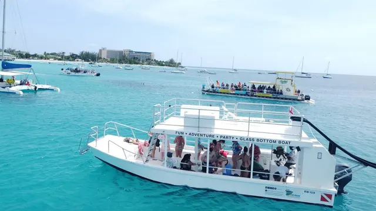

Glass-bottom boat tours · Holetown, BarbadosSwim with turtles,snorkel a shipwreck.
Two hours on the calm west coast of Barbados: feed and snorkel with sea turtles, swim over a shipwreck at Folkestone Marine Reserve, ride the slide and enjoy unlimited Bajan rum punch.
Same boat, same crew. Better price when you book with us.
Per adult on big booking sites, plus their fees.
Per adult. Your booking goes straight to the crew on WhatsApp, and you can ask us anything.
Barbados boat tours, your way.
Join a shared turtle and shipwreck tour with a small group, catch the sunset trip, or book the whole glass-bottom boat for your group.

Turtle & Shipwreck Snorkel Tour
Feed and snorkel with sea turtles, then swim over the shipwreck and reef at Folkestone Marine Reserve.
Sunset Turtle Tour
Both snorkel stops, then golden hour on the sun deck with a rum punch as the sun goes down.

Private Boat Charter
The whole boat for birthdays, families, friends and celebrations. Your time, your group.
Pick your time on the water.
Every shared tour lasts two hours, with no more than 20 guests, so everyone gets time with the turtles. The 3 PM tour and the 4 PM sunset tour don't run on the same day: whichever is booked first goes ahead.
Two hours, five moments you'll remember.
Scroll to follow the boat. This is what a shared tour looks like, from stepping on board at Folkestone to the last rum punch.
- 00:00
Board at Folkestone
Meet the crew by the yellow lifeguard tower at Folkestone Marine Reserve, or get picked up by boat from your west coast beach when we can reach it.
- 00:10
The glass bottom
Watch the reef pass under your feet. Kids and non-swimmers get the same view as everyone else.
- 00:25
Turtle feeding
Snorkel up close with hawksbill sea turtles while the crew feeds them.
- 00:55
Shipwreck & reef
Snorkel above the shipwreck in Folkestone Marine Reserve and feed hundreds of fish. Stingrays and tarpon sometimes join in.
- 01:25
Slide, plunge & rum punch
Ride the slide, jump off the plunge platform, then relax on the sun deck with unlimited Bajan rum punch.
See it from above and below.
Real footage from our trips: the boat from the air, the turtles up close and the slide.
Just bring a towel. We've got the rest.
Everything below is included in every shared and private tour.
- Two snorkelling stops: turtle feeding, and the shipwreck and reef at Folkestone Marine Reserve
- Use of the water slide and plunge platform
- Life jackets and snorkelling equipment
- Unlimited Bajan rum punch, rum mixes, whiskey, soft drinks and bottled water
- Music on board
- Bathroom and changing room on board
Good to know
- Meet by the yellow lifeguard tower, Folkestone Marine Reserve
- Arrive at least 15 minutes before your tour
- Free boat pickup from west coast beaches when possible
- Children 12 and under: US$45 · Under 3: free
- Full refund if you cancel more than 24 hours before (deposit bookings)
Real guests, real turtles.
A few moments from our trips. See the full gallery.


The crew was very friendly and professional. We enjoyed seeing the turtles and the slide on the boat.
The boat was clean, and well equipped. Snorkelling gear was in really good condition.
We saw the shipwrecks and turtles! The price is very nice.
Your boat. Your day.
Book the whole glass-bottom boat for up to 40 guests: birthdays, family reunions, bachelorettes, team days or just your crew.
Find us at Folkestone.
Folkestone Marine Reserve & Visitor Centre in Holetown, St James, is our main pickup point on the west coast.
· Atlantic Standard Time
Our sunset tour runs 4–6 PM.
Before you book.
The quick answers. See the full FAQ for more.
We meet by the yellow lifeguard tower at Folkestone Marine Reserve & Visitor Centre in Holetown, St James. Please arrive at least 15 minutes before your tour. Free pickup by boat from other west coast beaches is possible when the boat can get there. Just ask when you book.
Shared tours are US$60 per adult and US$45 for children aged 12 and under. Children under 3 go free. Private charters start at US$600 for 2 hours for up to 10 guests.
Turtle feeding is one of our two snorkel stops on every tour. Sea turtles are wild animals, but the crew knows exactly where they like to feed.
Yes. If you paid a deposit, cancel more than 24 hours before your tour for a full refund.